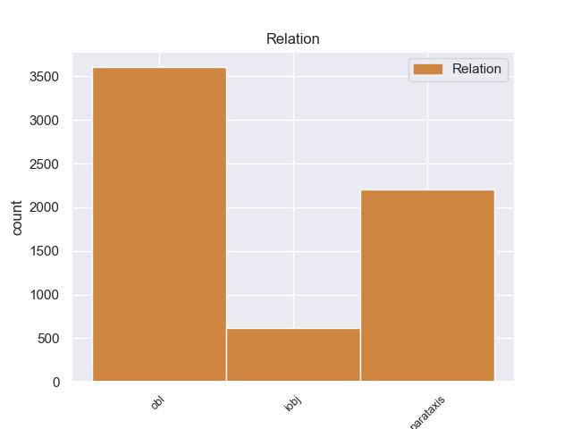
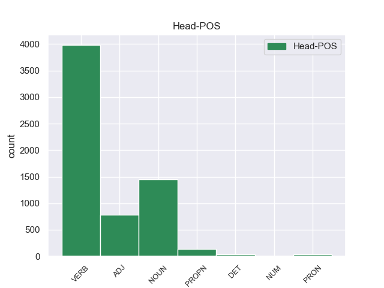
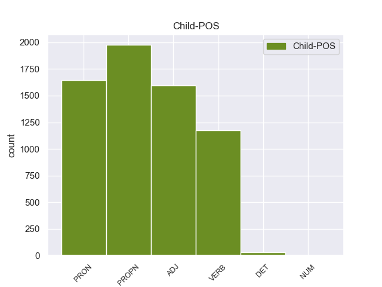

Distribution of features within this leaf



Agreement Rules sorted by frequency.
- When the dependent token is the oblique nominal(obl) of the head token, and the dependent token is ADJ.
1 Я _ _ _ _ 0 _ _ _
2 сорвал _ _ _ _ 0 _ _ _
3 гриб _ _ _ _ 0 _ _ _
4 , _ _ _ _ 0 _ _ _
5 он _ _ _ _ 0 _ _ _
6 был _ _ _ _ 0 _ _ _
7 каменной _ _ _ _ 0 _ _ _
8 крепости _ _ _ _ 0 _ _ _
9 , _ _ _ _ 0 _ _ _
10 и _ _ _ _ 0 _ _ _
11 сунул совать VERB _ Aspect=Perf|Gender=Masc|Mood=Ind|Number=Sing|Tense=Past|VerbForm=Fin|Voice=Act 0 _ _ _
12 его _ _ _ _ 0 _ _ _
13 в _ _ _ _ 0 _ _ _
14 карман _ _ _ _ 0 _ _ _
15 , _ _ _ _ 0 _ _ _
16 уверенный уверенный ADJ _ Case=Nom|Degree=Pos|Gender=Masc|Number=Sing 11 obl 11:obl SpaceAfter=No
17 , _ _ _ _ 0 _ _ _
18 что _ _ _ _ 0 _ _ _
19 он _ _ _ _ 0 _ _ _
20 не _ _ _ _ 0 _ _ _
21 сломается _ _ _ _ 0 _ _ _
22 . _ _ _ _ 0 _ _ _
1 Мальчик _ _ _ _ 0 _ _ _
2 взял _ _ _ _ 0 _ _ _
3 свою _ _ _ _ 0 _ _ _
4 синь _ _ _ _ 0 _ _ _
5 и _ _ _ _ 0 _ _ _
6 свое _ _ _ _ 0 _ _ _
7 золото _ _ _ _ 0 _ _ _
8 от _ _ _ _ 0 _ _ _
9 Шурика _ _ _ _ 0 _ _ _
10 , _ _ _ _ 0 _ _ _
11 человека _ _ _ _ 0 _ _ _
12 - _ _ _ _ 0 _ _ _
13 рыбки _ _ _ _ 0 _ _ _
14 , _ _ _ _ 0 _ _ _
15 но _ _ _ _ 0 _ _ _
16 в _ _ _ _ 0 _ _ _
17 отличие _ _ _ _ 0 _ _ _
18 от _ _ _ _ 0 _ _ _
19 Шурика Шурик PROPN _ Animacy=Anim|Case=Gen|Gender=Masc|Number=Sing 23 obl 23:obl _
20 этот _ _ _ _ 0 _ _ _
21 маленький _ _ _ _ 0 _ _ _
22 упрямец _ _ _ _ 0 _ _ _
23 казался казаться VERB _ Aspect=Imp|Gender=Masc|Mood=Ind|Number=Sing|Tense=Past|VerbForm=Fin|Voice=Mid 0 _ _ _
24 крепко _ _ _ _ 0 _ _ _
25 заземленным _ _ _ _ 0 _ _ _
26 . _ _ _ _ 0 _ _ _
1 И _ _ _ _ 0 _ _ _
2 я _ _ _ _ 0 _ _ _
3 послушался послушаться VERB _ Aspect=Perf|Gender=Masc|Mood=Ind|Number=Sing|Tense=Past|VerbForm=Fin|Voice=Mid 0 _ _ _
4 голоса _ _ _ _ 0 _ _ _
5 - _ _ _ _ 0 _ _ _
6 полез полезть VERB _ Aspect=Perf|Gender=Masc|Mood=Ind|Number=Sing|Tense=Past|VerbForm=Fin|Voice=Act 3 parataxis 3:parataxis _
7 напролом _ _ _ _ 0 _ _ _
8 в _ _ _ _ 0 _ _ _
9 еловую _ _ _ _ 0 _ _ _
10 теснотищу _ _ _ _ 0 _ _ _
11 и _ _ _ _ 0 _ _ _
12 быстро _ _ _ _ 0 _ _ _
13 накопал _ _ _ _ 0 _ _ _
14 с _ _ _ _ 0 _ _ _
15 десяток _ _ _ _ 0 _ _ _
16 отличных _ _ _ _ 0 _ _ _
17 белых _ _ _ _ 0 _ _ _
18 грибов _ _ _ _ 0 _ _ _
19 . _ _ _ _ 0 _ _ _
1 - _ _ _ _ 0 _ _ _
2 У _ _ _ _ 0 _ _ _
3 него он PRON _ Case=Gen|Gender=Masc|Number=Sing|Person=3 4 obl 4:obl _
4 был быть VERB _ Aspect=Imp|Gender=Masc|Mood=Ind|Number=Sing|Tense=Past|VerbForm=Fin|Voice=Act 0 _ _ _
5 вежливый _ _ _ _ 0 _ _ _
6 , _ _ _ _ 0 _ _ _
7 мягкий _ _ _ _ 0 _ _ _
8 и _ _ _ _ 0 _ _ _
9 терпеливый _ _ _ _ 0 _ _ _
10 голос _ _ _ _ 0 _ _ _
11 . _ _ _ _ 0 _ _ _
1 Она _ _ _ _ 0 _ _ _
2 была _ _ _ _ 0 _ _ _
3 доверчивой _ _ _ _ 0 _ _ _
4 и _ _ _ _ 0 _ _ _
5 доброй _ _ _ _ 0 _ _ _
6 птицей _ _ _ _ 0 _ _ _
7 , _ _ _ _ 0 _ _ _
8 в _ _ _ _ 0 _ _ _
9 ней _ _ _ _ 0 _ _ _
10 чувствовался _ _ _ _ 0 _ _ _
11 прекрасный _ _ _ _ 0 _ _ _
12 характер характер NOUN _ Animacy=Inan|Case=Nom|Gender=Masc|Number=Sing 0 _ _ _
13 : _ _ _ _ 0 _ _ _
14 широкий широкий ADJ _ Case=Nom|Degree=Pos|Gender=Masc|Number=Sing 12 parataxis 12:parataxis SpaceAfter=No
15 , _ _ _ _ 0 _ _ _
16 беспечный _ _ _ _ 0 _ _ _
17 , _ _ _ _ 0 _ _ _
18 дерзкий _ _ _ _ 0 _ _ _
19 . _ _ _ _ 0 _ _ _
1 Волховский _ _ _ _ 0 _ _ _
2 фронт _ _ _ _ 0 _ _ _
3 , _ _ _ _ 0 _ _ _
4 хотя _ _ _ _ 0 _ _ _
5 и _ _ _ _ 0 _ _ _
6 связанный _ _ _ _ 0 _ _ _
7 напрямую _ _ _ _ 0 _ _ _
8 с _ _ _ _ 0 _ _ _
9 Москвой _ _ _ _ 0 _ _ _
10 тремя _ _ _ _ 0 _ _ _
11 железными _ _ _ _ 0 _ _ _
12 дорогами дорога NOUN _ Animacy=Inan|Case=Ins|Gender=Fem|Number=Plur 0 _ _ _
13 - _ _ _ _ 0 _ _ _
14 через _ _ _ _ 0 _ _ _
15 Вишеру Вишера PROPN _ Animacy=Inan|Case=Acc|Gender=Fem|Number=Sing 12 parataxis 12:parataxis SpaceAfter=No
16 , _ _ _ _ 0 _ _ _
17 Неболчи _ _ _ _ 0 _ _ _
18 и _ _ _ _ 0 _ _ _
19 Тихвин _ _ _ _ 0 _ _ _
20 , _ _ _ _ 0 _ _ _
21 - _ _ _ _ 0 _ _ _
22 снабжался _ _ _ _ 0 _ _ _
23 плохо _ _ _ _ 0 _ _ _
24 , _ _ _ _ 0 _ _ _
25 словно _ _ _ _ 0 _ _ _
26 ему _ _ _ _ 0 _ _ _
27 полагалось _ _ _ _ 0 _ _ _
28 хоть _ _ _ _ 0 _ _ _
29 в _ _ _ _ 0 _ _ _
30 малой _ _ _ _ 0 _ _ _
31 мере _ _ _ _ 0 _ _ _
32 делить _ _ _ _ 0 _ _ _
33 судьбу _ _ _ _ 0 _ _ _
34 блокадного _ _ _ _ 0 _ _ _
35 Ленинграда _ _ _ _ 0 _ _ _
36 , _ _ _ _ 0 _ _ _
37 который _ _ _ _ 0 _ _ _
38 он _ _ _ _ 0 _ _ _
39 никак _ _ _ _ 0 _ _ _
40 не _ _ _ _ 0 _ _ _
41 мог _ _ _ _ 0 _ _ _
42 освободить _ _ _ _ 0 _ _ _
43 . _ _ _ _ 0 _ _ _
1 Третий _ _ _ _ 0 _ _ _
2 во _ _ _ _ 0 _ _ _
3 втором _ _ _ _ 0 _ _ _
4 ряду _ _ _ _ 0 _ _ _
5 оставил оставить VERB _ Aspect=Perf|Gender=Masc|Mood=Ind|Number=Sing|Tense=Past|VerbForm=Fin|Voice=Act 0 _ _ _
6 ему он PRON _ Case=Dat|Gender=Masc|Number=Sing|Person=3 5 iobj 5:iobj _
7 нелегкое _ _ _ _ 0 _ _ _
8 наследство _ _ _ _ 0 _ _ _
9 , _ _ _ _ 0 _ _ _
10 добрую _ _ _ _ 0 _ _ _
11 , _ _ _ _ 0 _ _ _
12 бестолковую _ _ _ _ 0 _ _ _
13 вдову _ _ _ _ 0 _ _ _
14 , _ _ _ _ 0 _ _ _
15 женщину _ _ _ _ 0 _ _ _
16 , _ _ _ _ 0 _ _ _
17 лишенную _ _ _ _ 0 _ _ _
18 профессии _ _ _ _ 0 _ _ _
19 , _ _ _ _ 0 _ _ _
20 и _ _ _ _ 0 _ _ _
21 дочь _ _ _ _ 0 _ _ _
22 , _ _ _ _ 0 _ _ _
23 маленькое _ _ _ _ 0 _ _ _
24 существо _ _ _ _ 0 _ _ _
25 , _ _ _ _ 0 _ _ _
26 постоянно _ _ _ _ 0 _ _ _
27 страдающее _ _ _ _ 0 _ _ _
28 желудком _ _ _ _ 0 _ _ _
29 . _ _ _ _ 0 _ _ _
1 Отец _ _ _ _ 0 _ _ _
2 лег _ _ _ _ 0 _ _ _
3 на _ _ _ _ 0 _ _ _
4 лопатки _ _ _ _ 0 _ _ _
5 в _ _ _ _ 0 _ _ _
6 траву _ _ _ _ 0 _ _ _
7 и _ _ _ _ 0 _ _ _
8 предложил предложить VERB _ Aspect=Perf|Gender=Masc|Mood=Ind|Number=Sing|Tense=Past|VerbForm=Fin|Voice=Act 0 _ _ _
9 лечь _ _ _ _ 0 _ _ _
10 на _ _ _ _ 0 _ _ _
11 него _ _ _ _ 0 _ _ _
12 семнадцатилетнему _ _ _ _ 0 _ _ _
13 Кольке Колька PROPN _ Animacy=Anim|Case=Dat|Gender=Masc|Number=Sing 8 iobj 8:iobj _
14 Шугаеву _ _ _ _ 0 _ _ _
15 и _ _ _ _ 0 _ _ _
16 крепко _ _ _ _ 0 _ _ _
17 держать _ _ _ _ 0 _ _ _
18 . _ _ _ _ 0 _ _ _
1 Кроме _ _ _ _ 0 _ _ _
2 того то PRON _ Animacy=Inan|Case=Gen|Gender=Neut|Number=Sing 4 parataxis 4:parataxis SpaceAfter=No
3 , _ _ _ _ 0 _ _ _
4 достаточно достаточный ADJ _ Degree=Pos|Gender=Neut|Number=Sing|Variant=Short 0 _ _ _
5 набрать _ _ _ _ 0 _ _ _
6 на _ _ _ _ 0 _ _ _
7 особой _ _ _ _ 0 _ _ _
8 приставке _ _ _ _ 0 _ _ _
9 буквенный _ _ _ _ 0 _ _ _
10 или _ _ _ _ 0 _ _ _
11 цифровой _ _ _ _ 0 _ _ _
12 код _ _ _ _ 0 _ _ _
13 , _ _ _ _ 0 _ _ _
14 как _ _ _ _ 0 _ _ _
15 телеэкран _ _ _ _ 0 _ _ _
16 превращается _ _ _ _ 0 _ _ _
17 в _ _ _ _ 0 _ _ _
18 домашнее _ _ _ _ 0 _ _ _
19 справочное _ _ _ _ 0 _ _ _
20 бюро _ _ _ _ 0 _ _ _
21 . _ _ _ _ 0 _ _ _
1 Моя _ _ _ _ 0 _ _ _
2 подруга _ _ _ _ 0 _ _ _
3 уехала _ _ _ _ 0 _ _ _
4 , _ _ _ _ 0 _ _ _
5 и _ _ _ _ 0 _ _ _
6 я _ _ _ _ 0 _ _ _
7 осталась остаться VERB _ Aspect=Perf|Gender=Fem|Mood=Ind|Number=Sing|Tense=Past|VerbForm=Fin|Voice=Mid 0 _ _ _
8 совсем _ _ _ _ 0 _ _ _
9 одна один DET _ Case=Nom|Degree=Pos|Gender=Fem|Number=Sing 7 obl 7:obl SpaceAfter=No
10 . _ _ _ _ 0 _ _ _
1 Наша _ _ _ _ 0 _ _ _
2 школа _ _ _ _ 0 _ _ _
3 в _ _ _ _ 0 _ _ _
4 национальных _ _ _ _ 0 _ _ _
5 республиках _ _ _ _ 0 _ _ _
6 давно _ _ _ _ 0 _ _ _
7 и _ _ _ _ 0 _ _ _
8 уверенно _ _ _ _ 0 _ _ _
9 выдвинула _ _ _ _ 0 _ _ _
10 русский _ _ _ _ 0 _ _ _
11 язык _ _ _ _ 0 _ _ _
12 в _ _ _ _ 0 _ _ _
13 качестве _ _ _ _ 0 _ _ _
14 альтернативного альтернативный ADJ _ Case=Gen|Degree=Pos|Gender=Masc|Number=Sing 0 _ _ _
15 родному родной ADJ _ Case=Dat|Degree=Pos|Gender=Masc|Number=Sing 14 iobj 14:iobj SpaceAfter=No
16 , _ _ _ _ 0 _ _ _
17 и _ _ _ _ 0 _ _ _
18 миллионы _ _ _ _ 0 _ _ _
19 учащихся _ _ _ _ 0 _ _ _
20 пренебрегают _ _ _ _ 0 _ _ _
21 языком _ _ _ _ 0 _ _ _
22 предков _ _ _ _ 0 _ _ _
23 . _ _ _ _ 0 _ _ _
1 Действует _ _ _ _ 0 _ _ _
2 принцип принцип NOUN _ Animacy=Inan|Case=Nom|Gender=Masc|Number=Sing 0 _ _ _
3 : _ _ _ _ 0 _ _ _
4 " _ _ _ _ 0 _ _ _
5 свой свой DET _ Case=Nom|Gender=Masc|Number=Sing 2 parataxis 2:parataxis _
6 - _ _ _ _ 0 _ _ _
7 чужой _ _ _ _ 0 _ _ _
8 " _ _ _ _ 0 _ _ _
9 , _ _ _ _ 0 _ _ _
10 ведь _ _ _ _ 0 _ _ _
11 яркий _ _ _ _ 0 _ _ _
12 , _ _ _ _ 0 _ _ _
13 талантливый _ _ _ _ 0 _ _ _
14 человек _ _ _ _ 0 _ _ _
15 может _ _ _ _ 0 _ _ _
16 сломать _ _ _ _ 0 _ _ _
17 сложившийся _ _ _ _ 0 _ _ _
18 порядок _ _ _ _ 0 _ _ _
19 вещей _ _ _ _ 0 _ _ _
20 , _ _ _ _ 0 _ _ _
21 потому _ _ _ _ 0 _ _ _
22 - _ _ _ _ 0 _ _ _
23 то _ _ _ _ 0 _ _ _
24 " _ _ _ _ 0 _ _ _
25 чужаки _ _ _ _ 0 _ _ _
26 " _ _ _ _ 0 _ _ _
27 и _ _ _ _ 0 _ _ _
28 не _ _ _ _ 0 _ _ _
29 проходят _ _ _ _ 0 _ _ _
30 . _ _ _ _ 0 _ _ _
1 Известный известный ADJ _ Case=Nom|Degree=Pos|Gender=Masc|Number=Sing 0 _ _ _
2 как _ _ _ _ 0 _ _ _
3 один один NUM _ Case=Nom|Gender=Masc 1 obl 1:obl _
4 из _ _ _ _ 0 _ _ _
5 самых _ _ _ _ 0 _ _ _
6 сильных _ _ _ _ 0 _ _ _
7 думских _ _ _ _ 0 _ _ _
8 шахматистов _ _ _ _ 0 _ _ _
9 , _ _ _ _ 0 _ _ _
10 Жуков _ _ _ _ 0 _ _ _
11 мог _ _ _ _ 0 _ _ _
12 бы _ _ _ _ 0 _ _ _
13 сказать _ _ _ _ 0 _ _ _
14 , _ _ _ _ 0 _ _ _
15 что _ _ _ _ 0 _ _ _
16 правительство _ _ _ _ 0 _ _ _
17 перепутало _ _ _ _ 0 _ _ _
18 порядок _ _ _ _ 0 _ _ _
19 ходов _ _ _ _ 0 _ _ _
20 . _ _ _ _ 0 _ _ _
1 Действительно _ _ _ _ 0 _ _ _
2 , _ _ _ _ 0 _ _ _
3 если _ _ _ _ 0 _ _ _
4 бы _ _ _ _ 0 _ _ _
5 вирус _ _ _ _ 0 _ _ _
6 передавался _ _ _ _ 0 _ _ _
7 только _ _ _ _ 0 _ _ _
8 при _ _ _ _ 0 _ _ _
9 близком _ _ _ _ 0 _ _ _
10 контакте контакт NOUN _ Animacy=Inan|Case=Loc|Gender=Masc|Number=Sing 0 _ _ _
11 с _ _ _ _ 0 _ _ _
12 инфицированным инфицировать VERB _ Aspect=Perf|Case=Ins|Gender=Masc|Number=Sing|Tense=Past|VerbForm=Part|Voice=Pass 10 obl 10:obl SpaceAfter=No
13 , _ _ _ _ 0 _ _ _
14 скорость _ _ _ _ 0 _ _ _
15 его _ _ _ _ 0 _ _ _
16 распространения _ _ _ _ 0 _ _ _
17 была _ _ _ _ 0 _ _ _
18 бы _ _ _ _ 0 _ _ _
19 намного _ _ _ _ 0 _ _ _
20 ниже _ _ _ _ 0 _ _ _
21 . _ _ _ _ 0 _ _ _
Disagree Examples:
1 Однако _ _ _ _ 0 _ _ _
2 стиль _ _ _ _ 0 _ _ _
3 работы _ _ _ _ 0 _ _ _
4 Семена _ _ _ _ 0 _ _ _
5 Еремеевича _ _ _ _ 0 _ _ _
6 заключался заключаться VERB _ Aspect=Imp|Gender=Masc|Mood=Ind|Number=Sing|Tense=Past|VerbForm=Fin|Voice=Mid 0 _ _ _
7 в _ _ _ _ 0 _ _ _
8 том то PRON _ Animacy=Inan|Case=Loc|Gender=Neut|Number=Sing 6 obl 6:obl SpaceAfter=No
9 , _ _ _ _ 0 _ _ _
10 чтобы _ _ _ _ 0 _ _ _
11 принимать _ _ _ _ 0 _ _ _
12 всех _ _ _ _ 0 _ _ _
13 желающих _ _ _ _ 0 _ _ _
14 и _ _ _ _ 0 _ _ _
15 лично _ _ _ _ 0 _ _ _
16 вникать _ _ _ _ 0 _ _ _
17 в _ _ _ _ 0 _ _ _
18 дело _ _ _ _ 0 _ _ _
19 . _ _ _ _ 0 _ _ _
1 Кабинет _ _ _ _ 0 _ _ _
2 отличался _ _ _ _ 0 _ _ _
3 скромностью _ _ _ _ 0 _ _ _
4 , _ _ _ _ 0 _ _ _
5 присущей присущий ADJ _ Case=Ins|Degree=Pos|Gender=Fem|Number=Sing 0 _ _ _
6 Семену Семен PROPN _ Animacy=Anim|Case=Dat|Gender=Masc|Number=Sing 5 iobj 5:iobj _
7 Еремеевичу _ _ _ _ 0 _ _ _
8 . _ _ _ _ 0 _ _ _
1 Ефимова _ _ _ _ 0 _ _ _
2 села _ _ _ _ 0 _ _ _
3 на _ _ _ _ 0 _ _ _
4 краешек _ _ _ _ 0 _ _ _
5 холодного _ _ _ _ 0 _ _ _
6 кресла _ _ _ _ 0 _ _ _
7 и _ _ _ _ 0 _ _ _
8 посмотрела смотреть VERB _ Aspect=Perf|Gender=Fem|Mood=Ind|Number=Sing|Tense=Past|VerbForm=Fin|Voice=Act 0 _ _ _
9 сквозь _ _ _ _ 0 _ _ _
10 бронзовый _ _ _ _ 0 _ _ _
11 забор _ _ _ _ 0 _ _ _
12 чернильного _ _ _ _ 0 _ _ _
13 прибора _ _ _ _ 0 _ _ _
14 на _ _ _ _ 0 _ _ _
15 Семена Семен PROPN _ Animacy=Anim|Case=Acc|Gender=Masc|Number=Sing 8 obl 8:obl _
16 Еремеевича _ _ _ _ 0 _ _ _
17 . _ _ _ _ 0 _ _ _
1 У _ _ _ _ 0 _ _ _
2 него он PRON _ Case=Gen|Gender=Masc|Number=Sing|Person=3 3 obl 3:obl _
3 было быть VERB _ Aspect=Imp|Gender=Neut|Mood=Ind|Number=Sing|Tense=Past|VerbForm=Fin|Voice=Act 0 _ _ _
4 полное _ _ _ _ 0 _ _ _
5 симпатичное _ _ _ _ 0 _ _ _
6 лицо _ _ _ _ 0 _ _ _
7 некурящего _ _ _ _ 0 _ _ _
8 человека _ _ _ _ 0 _ _ _
9 и _ _ _ _ 0 _ _ _
10 белые _ _ _ _ 0 _ _ _
11 , _ _ _ _ 0 _ _ _
12 совершенно _ _ _ _ 0 _ _ _
13 седые _ _ _ _ 0 _ _ _
14 волосы _ _ _ _ 0 _ _ _
15 . _ _ _ _ 0 _ _ _
1 Она _ _ _ _ 0 _ _ _
2 взглянула взглянуть VERB _ Aspect=Perf|Gender=Fem|Mood=Ind|Number=Sing|Tense=Past|VerbForm=Fin|Voice=Act 0 _ _ _
3 на _ _ _ _ 0 _ _ _
4 него он PRON _ Case=Acc|Gender=Masc|Number=Sing|Person=3 2 obl 2:obl SpaceAfter=No
5 , _ _ _ _ 0 _ _ _
6 как _ _ _ _ 0 _ _ _
7 будто _ _ _ _ 0 _ _ _
8 не _ _ _ _ 0 _ _ _
9 понимая _ _ _ _ 0 _ _ _
10 , _ _ _ _ 0 _ _ _
11 что _ _ _ _ 0 _ _ _
12 надо _ _ _ _ 0 _ _ _
13 просто _ _ _ _ 0 _ _ _
14 сесть _ _ _ _ 0 _ _ _
15 и _ _ _ _ 0 _ _ _
16 подождать _ _ _ _ 0 _ _ _
17 . _ _ _ _ 0 _ _ _